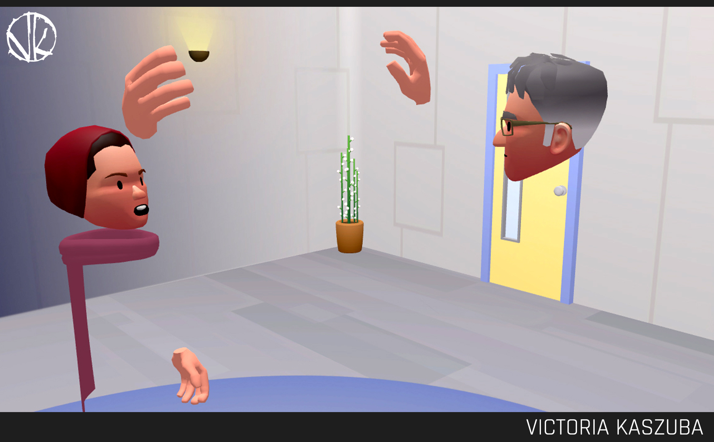
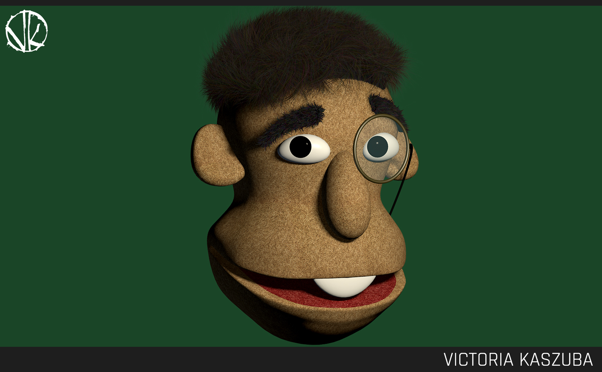
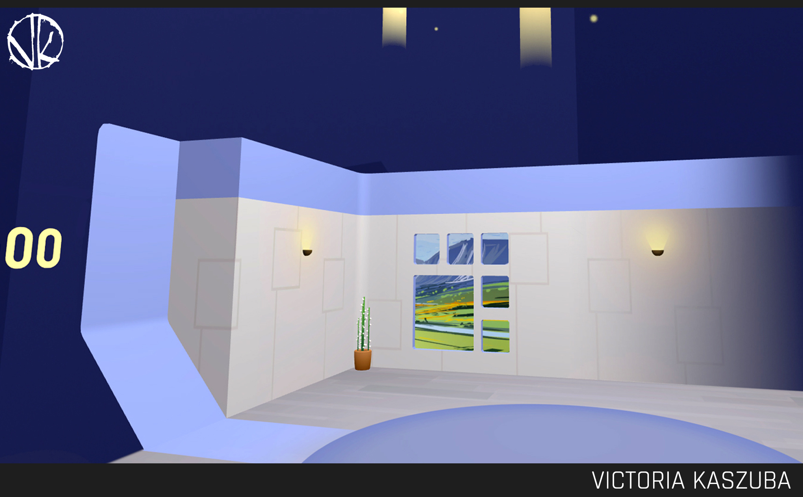

DESIGN
PLUTO VR
Imagine if you could be in the same room as a friend, a loved one, or a coworker, while they're 3000 miles away. WHAT?! My work with Pluto resulted in just that. As the lead artist for this small Seattle-based Virtual Reality start-up, it was up to me to try anything and everything to create a fully-immersive social experience. I created dozens of environments, all with different styles and atmospheres. I created an avatar system with animated hands and mouths that changed shape to match what the user said, along with eye-tracking so the person you were speaking to could tell if you weren't paying attention to them. I also occasionally created characters of my coworkers.

